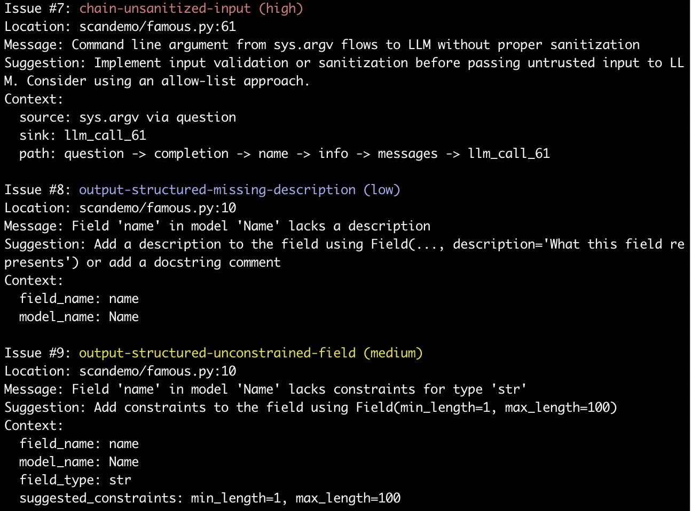

Andrew Marble
marble.onl
andrew@kereva.io
March 17, 2025
Test-based evaluation of AI systems forms only a part of the quality assurance process. We discuss other offerings that supplement evals and mention an open-source static analysis tool we have built to scan code implementing LLM workflows for issues that could lead to security and performance problems.
We previously discussed the gaps in using “evals” or test-based performance measurement for systems that use large language models. Part of the problem is that evals look at behavior and don’t go to root cause. Passing an evaluation does not mean there are no underlying issues, it just means particular symptoms are not present.
AI models, although technically deterministic (with caveats), are intractably complex and so we cannot predict how they will respond to every input, we can only test. But, when we evaluate systems and find deficiencies, these are very often traceable to some deterministic root cause and not purely random behavior. For example, hallucination in RAG is likely to arise from incomplete or ambiguous information included as context, rather than appearing out of the blue. On the other hand, some behaviors, like security concerns due to prompt injection, are an inevitable consequence of LLM architecture. These can only be eliminated by sanitization of inputs or outputs; behavioral evaluation only checks how easy the exploit is for some known set of attacks, not whether it’s possible.
The point is that system architecture is important, and evals don’t test architecture directly, just behavior. There are two families of tools we’ve seen that get closer to evaluating architecture.
First are those that log and analyze traces of AI program execution. Arize1 maintains an open source observability framework that records execution traces during evals and/or production runs. I find these are particularly useful when building with more complicated frameworks like LangChain where data flows through many steps before the actual LLM call. The traces let you examine and debug this flow.
Invariant Labs2 has a trace analyzer that scans agent execution traces for evidence of bugs or security violations. They support user defined policies to scan for specific issues and built-in security scans.
The tracing approach is good because it gets at both the behavior and architecture to give a full view of why the system behaves as it does. Additionally, the scanning capabilities of such tools can support runtime scanning, similar to software like Guardrails3.
The downside is that these scans rely either on test or runtime inputs and are in that sense reactive; the only way to find an issue is when an input that triggers one comes along (this input could be part of a test set of course). Thus, the Rumsfeld problem (we don’t know what we don’t know) and its cousin known unknowns (we may know jailbreaks are possible, we just didn’t find one) still exist.
The second option for scanning is direct code analysis. There are some model scanners such as Protect AI’s Model Scan4 that look at the model code itself for security exploits. But these focus on supply chain attacks compromising model execution rather than behavior vulnerabilities of LLMs (like prompt injection). We emphasize the distinction between the model code that is the actual matrix multiplications etc. that make up the model inference, and the application code that routes data to the model as part of a prompt and then interprets the model output and passes this back to the user or onward for more processing.
A security focused application code analysis tool is Agentic Radar by splxAI5. This software scans code (as of writing it focuses on agent frameworks from LangChain and CrewAI) to look for potential security issues. The advantage here is that the code scan addresses the root cause rather than behavior and so give more confidence about coverage of vulnerabilities because it doesn’t rely on testing specific prompts. It can also be applied simply during development, run offline.
Finally, we have just released Kereva-Scanner6, a framework and application agnostic code scanner that looks for both security and performance issues in LLM code. It currently supports python and uses abstract syntax tree analysis to look at both prompts and code flow to scan for different vulnerabilities. The scanner is open source, with pre-built scans, and custom rules. The picture below shows a snippet of scan output, in which issues like sanitization and proper definitions and constraints for structured output are highlighted.

Figure: Example output from Kereva-scanner
For traditional software, unit tests, trace-debugging, and static analysis tools all form a toolkit to check for application security and quality. The same evolution is happening with LLM software. Speculation is that evals have had the emphasis because of how LLMs evolved out of academic AI where model validation was the core activity in testing performance. But as LLMs become the foundation of commercial software, there is going to be increased emphasis on other testing, and static scanning has a role to play that is currently under-appreciated.